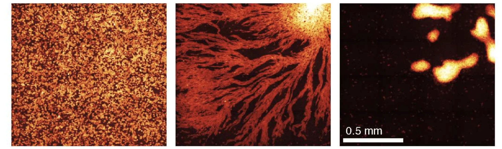
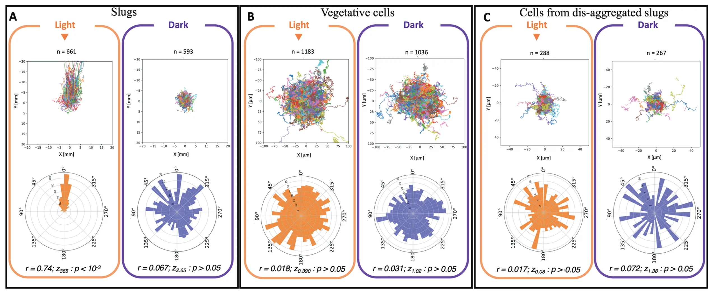

前号では、真正粘菌（Physarum）という脳も中心もない一個の細胞が、迷路を解き、記憶し、学ぶさまを眺めた。しかし真正粘菌は「一でありながら多」。切れば二つになり、近づければまた一つに戻る、ひとつづきの体だ。もしそうならば、彼らが見せた知性は特別な生き物の特別な生態に過ぎないのだろうか。細胞性粘菌（Dictyostelium discoideum）はそんな懸念を払拭するのにうってつけだ。彼らは、ばらばらに暮らす別々の個体だが、ときに集まって一つの体になるのである。さらにはなんと、一つになった集団が、どの個体にもできなかったことをしはじめる。今号ではその様子を、前号に引き続き、生きた実例（in vivo）として確認してみよう。
細胞性粘菌は、ふだんは土の中で一個ずつのアメーバとして暮らしている。バクテリアを食べ、分裂し、それぞれが自分の生を生きている。ところが餌が尽きて飢えると、ばらばらだった何万もの細胞が集まって、スラッグ（ナメクジのような一つの体）になり移動し、やがて子実体（いわゆるキノコのような構造体）になるのだ。細い柄が立ち、その先に、丈夫な胞子の塊がのる。もともとアメーバだった個体が合体するのである。

De Palo, Yi & Endres (2017) PLOS Biology 15(4): e1002602 より（Fig 3A を切り出し）。CC BY 4.0。
どうしてこんなことが可能なのか。なんと、このプロセスに司令塔は必要ない。飢えた細胞はcAMPという化学物質を拍のように放つのだが、そのcAMPの密度が十分に高まると、細胞たちは確率的に脈を連鎖させ、互いを励起させ、やがて集団を貫く波になる。そして、その波の中心へ引き寄せられる形で細胞は集まっていくのである（Gregor et al., 2010）。バラバラだった個体が、共有された媒体（cAMP）を通じて連鎖し、確率的に秩序が立ち上がるのである。
こうして一つになった集団（スラッグ）は地表へ出るために光を感じて向かっていく。ここで注目に値するのは、個体のときには光に向かう能力を持たない（光走性を示さない）という点だ（Genettais et al., 2025）。光へ進んでいたスラッグをばらばらにほどいて取り出した細胞さえも、光には一切向かわない。さらには、細胞を高い密度で並べてもなお光走性は生まれない。スラッグという「自己組織化した」集団になったときだけ、はじめて立ち上がる能力なのである。そして興味深いことに、この能力が参加する細胞の数に比例する。細胞が二千個ほどより少ないスラッグは光へ向かう気配がないが、それを超えると徐々に光へ向かうようになっていく。

Genettais et al. (2025) PLOS ONE 20(5): e0321614, Fig 2 より。CC BY 4.0。
一度立ち止まって、この奇妙さを噛みしめたい。光を感じて進む能力は、どの細胞も持っていない。にもかかわらず、細胞が十分に集まって組織を作ると、その能力がどこからともなく現れる。前号の真正粘菌が「脳のない知性」だったとすれば、こちらは「担い手のいない知性」に近しいものがあるだろう。この不思議な現象について、光走性のメカニズムそのものは未だ論争中だが、有力な見立て（Bonner et al., 1988）によると、アンモニアが関わっている。光が当たると細胞はアンモニアを出す。一個の細胞が出すひと吹きはたちまち拡散して消える（揮発性があるため）が、多くの細胞が寄り集まって同時に出すと個々のひと吹きが消えずに残る。細胞たちはその勾配分布を手がかりに進んでいくのである。アンモニアの勾配は集団的に吹き出すからこそ生じるのであり、単体では現れない。それが光走性という能力が集団と共に創発されるカラクリだ。
現れるか現れないかギリギリの瀬戸際にある現象。これはイリヤ・プリゴジンの自己組織化の議論を思い出す。実際に、集合していく細胞たちの状態が、物理でいう臨界点、つまり水が氷になるような相転移の瀬戸際に似た状態にあることが示されている（De Palo et al., 2017）。有機体がこうした状態を有している理由については、過去にブライアン・グッドウィンとメイワン・ホーの研究で触れた通りだ。臨界の状態は共有されているがゆえに、各細胞は隣と直接やりとりするだけで、その効果は遠くまで「ただで（for free）」集団全体を貫いて伝わるのだ。
こうした状態伝播は、水のさざなみとは似て非なる。動きに「反応」して水面が波立つ現象は皿が大きくなっても強さが変わらないのに対して、「応答」を連鎖させる粘菌では数が増えるほどに増幅されて強い現象となるのだ。理論的にも、一つの細胞には検出できないほど微かな勾配すら、集団としてなら感じ取れることが示されている（Varennes et al., 2016）。現に、細胞性粘菌は酸素の濃い方向に向かう性質があるが、集団であるほどにこの勾配を敏感に感じ取って進むことができるのである（Cochet-Escartin et al., 2021）。これは集団知性の生じる１つのヒントなのではないだろうか。
本連載は、第3回で菌類を紹介した際にもこうした「担い手のいない知性」というテーゼに突き当たっている。しかし、菌糸は融合していて一本ずつ「取り出せない」。だからシェルドレイクは、知性や記憶の基盤は「特定できない」のであり、自分はそれを「意図的に語らない」と述べ、答えを留保していた。だが、細胞性粘菌を訪れたいま、われわれはもう一歩踏み込めて問いを深めることができるかもしれない。担い手がいないのは、担い手となる存在が変幻自在だからではない。個々の細胞との「間に」あるからではないだろうか。
脳のない生きものに知性や記憶を認めるとき、大切なのはそれを正しい水準に置くことだ（Sims, 2025）。粘菌の光走性は、一つの細胞の水準にはなく、集団という水準にある。担い手は、個体ではなく「関係」のほうにあるのだ。それは自ら生み出すものによって媒介されている（＝スティグマジー）。cAMPであれ、アンモニアであれ、酸素であれ。自ら生み出す（あるいは消費する）ものによって結びつき、感覚をより鋭く、応答をより強くしている。前号の問いに答えるならば、集団になることがもたらすのは、その間に生じる「関係」そのものであり、それが拡張する応答可能性なのではないだろうか。
こうした理解は、プロジェクトの現場にもそのまま当てはまるだろう。知性は必ずしもメンバーが担っているとは限らない。どの個人も持たないような知覚や判断が、チームに宿るということが、あり得るのではないだろうか。メンバーとメンバーのあいだに立ち上がり、互いに応答し合うほどに育つ能力。その応答は自らが生み出したものによって媒介されている（私たちにとっての「アンモニア」や「脈拍」が何なのか、考えてみると面白いだろう）。「誰のものでもない知性」が立ち上がるのを見つけ、媒介するものを自ら生み出し、育てることこそが、プロジェクトの妙技なのかもしれない。
さて本連載ではバクテリアから菌類から粘菌まで、小さな原始的な生き物を辿ってきた。しかし、例えば私たちの免疫細胞（好中球）も傷口に群がるとき自ら作った化学物質の勾配を頼りに集まるのであって、これは粘菌の集団性と良く似ている（Strickland et al., 2026）。つまり、生き物の内側も、見方を変えれば「集団知性」に溢れているのではないか。この個と集団の境界を絶妙に崩してくる動物が存在する。蛸（タコ）である。次回は、Peter Godfrey-Smithの著作を紹介しながら、異なる知性のあり方を探ってみたい。

.png)
{kind=link}
{kind=link}
{kind=link}